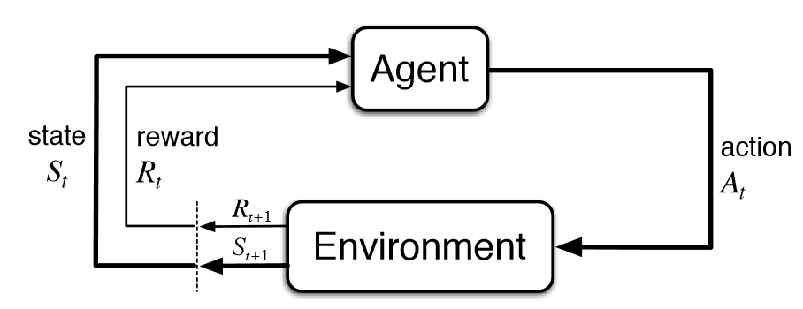
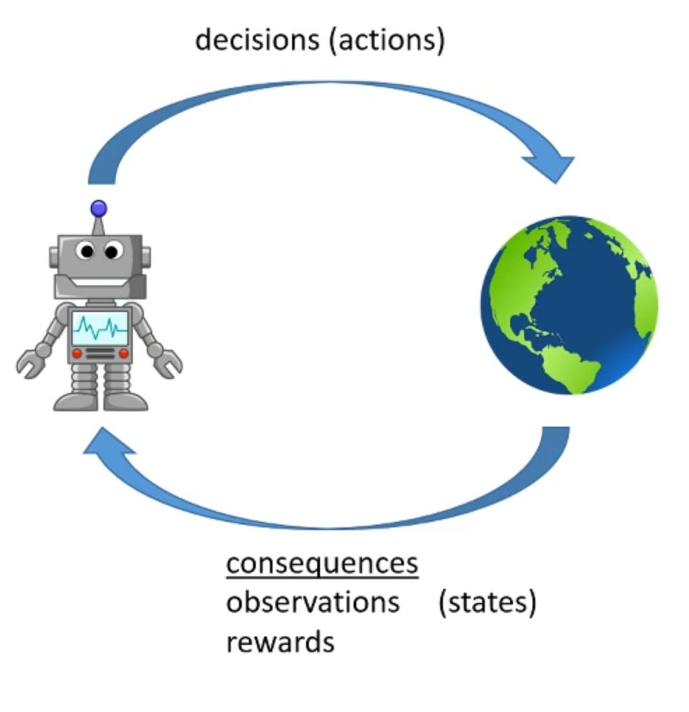
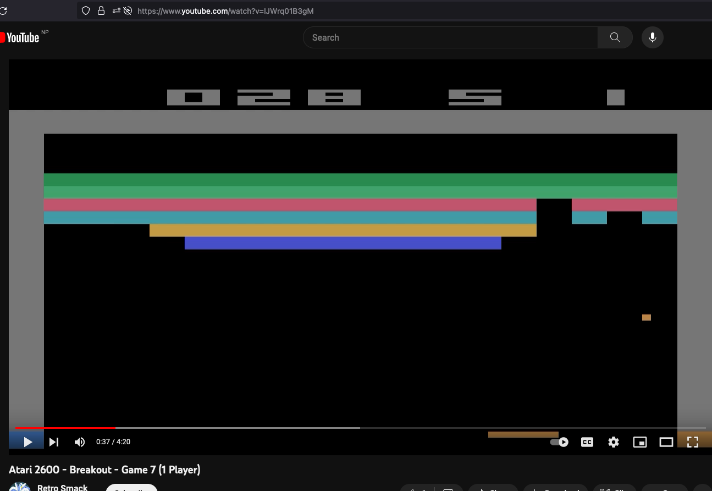
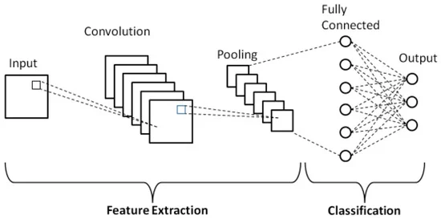

ICVF
Table of Contents
1. Reinforcement Learning

Figure 1: Agent-Environement-Action

Figure 2: RL
2. DQN: Deep Q-Network
Q Function \(Q: (s, a) \to r\)
At a state \(s\),
- \(a_1\) : \(Q(s, a_1)\)
- \(a_2\) : \(Q(s, a_2)\)
- \(a_3\) : \(Q(s, a_3)\)
Pick the action with highest return
\(a = argmax_{a} Q(s, a)\)
But we don't know the \(Q\) function, so use a network to represent the function (\(\hat{Q}\)) and learn that function.
\(Q(s, a) \gets r + max_a Q(s', a)\)
3. Value Function
Value Function: \(V: s \to r\)
At a state \(s\),
- \(a_1 \Rightarrow s_1\) : \(V(s_1)\)
- \(a_2 \Rightarrow s_2\) : \(V(s_2)\)
- \(a_3 \Rightarrow s_3\) : \(V(s_3)\)
Pick the action with highest return
4. Problem Statement
 pg. 18
- Algorithm is given game play video (It is told neither about actions nor reward)
- Pre-Training
- Give action and reward information
- Fine-Tune
- Play the game
The alogrithm has to try to understand the reason/intent behind whatever's happening on the screen.
5. ICVF - Intention Conditioned Value Function
\(V(s, s_+, z) \in [0,1]\)
Let's learn a function that says, what's the probability that we transition from state \(s\) to state \(s_+\) if acting with intent \(z\)
5.1. How would this function be useful?
After pre-training we know the reward function say \(r^\#\) thus we also know the intent with which we have to play \(z^\#\) then with,
\(V_r(s) = \sum_{s_+ \in S} r^\#(s_+) V(s, s_+, z^\#)\)
At state \(s\)
- \(a_1 \Rightarrow s_1\) : \(V_r(s_1)\)
- \(a_2 \Rightarrow s_2\) : \(V_r(s_2)\)
- \(a_3 \Rightarrow s_3\) : \(V_r(s_3)\)
Choose the action with max return.
5.2. How to represent \(V\), \(s\) and \(z\) ?
- State \(s\)
- We could represent the state as a matrix of pixels colors.
- Intent \(z\)
Intent is a representation of reward \(r\)
\(r: s \to \mathrm{R}\)
and \(r\) is a function from state to a real number.
How do we represent functions?
- Value function \(V\)
is a function of two states and a intent.
How do we represent that?
Solution:
- Use (ofcourse) neural networks to represent functions,
- Use linear representation for easier analysis and convergence gurantees,
- Use feature extractors to extract linear feature representation
5.2.1. Example of Feature Extraction

Figure 3: Example of Feature Extraction
5.2.2. Successor Representation
\(V(s, s_+, z) = e_s^T (I - P_z)^{-1} e_{s_+}\)
- \(e_s\) : Vector representing \(s\)
- \(e_{s_+}\) : Vector representing \(s_+\)
- \((I - P_z)^{-1}\) : Matrix representing Intention \(z\), \(P_z\) is transition probabilities under a policy with intent \(z\)
This form derives from The Successor Representation - Peter Dayan.pdf: Page 4
But since using punctate (1-hot) state encoding is not feasible, we convert state to linear features:
\(V(s, s_+, z) = \phi(s) T(z) \psi(z)\)
And this feature extraction is done using neural network parameterized by \(\theta\) :
\(\hat{V}(s, s_+, z) = \phi_\theta(s) T_\theta (z) \psi_\theta (s_+)\)
where, \(\phi(s)\) and \(\psi(s_+)\) are \(d\) -dimensional and \(T(z)\) is \(d \times d\) dimensional
5.3. Piecing it together
\(\hat{V}(s, s_+, z) = \phi_\theta(s) T_\theta (z) \psi_\theta (s_+)\)
If we can learn the above ICVF, then for a given reward function \(r^\#\), (pg. 4 eqn. 4)
\(V_r(s) = \sum_{s_+ \in S} r^\#(s_+) \hat{V}(s, s_+, z^\#)\)
\(V_r(s) = \phi(s) T(z) \sum_{s_+} r^\#(s_+) \psi(s_+)\)
\(V_r(s) = \phi(s) T(z) \psi(r)\)
Now, we also have an representation for \(r\) i.e. \(\psi(r)\), Since, Intent is a representation of reward \(r\), we have a representation for \(z\)
\(z = \psi(r)\)
This completes the representation part.
6. Training
Advantage function \(A_z(s, a)\) is the extra reward from taking action \(a\) at state \(s\) instead of acting according to intent \(z\)
\(A_z(s,a) = (r + V(s')) - V(s)\)
If \(A > 0\) : action is taken with intention \(z\)
In that case,
\(V(s, s_+, z) \gets 1(s=s_+) + V(s', s_+, z)\)
If \(A<0\) : don't update
This is the update equation.
Details:
- Use Expectile (pg. 4) (\(\alpha = 0.9\) )
- Use single sample estimate for Advantage (pg. 5)